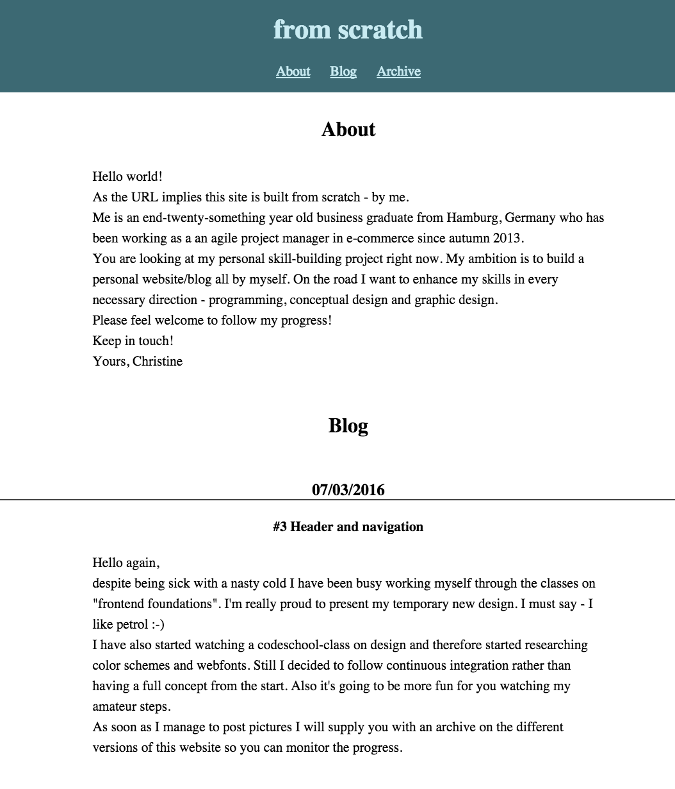

Version 1.1 (07/03/2016)
In this version I have updated some css. I managed to center all my content and built a very basic navigation in the header that also contains the section "archive" for the first time.
Also I did some research on colors and color schemes and decided that my site should be petrol - at least for now.
